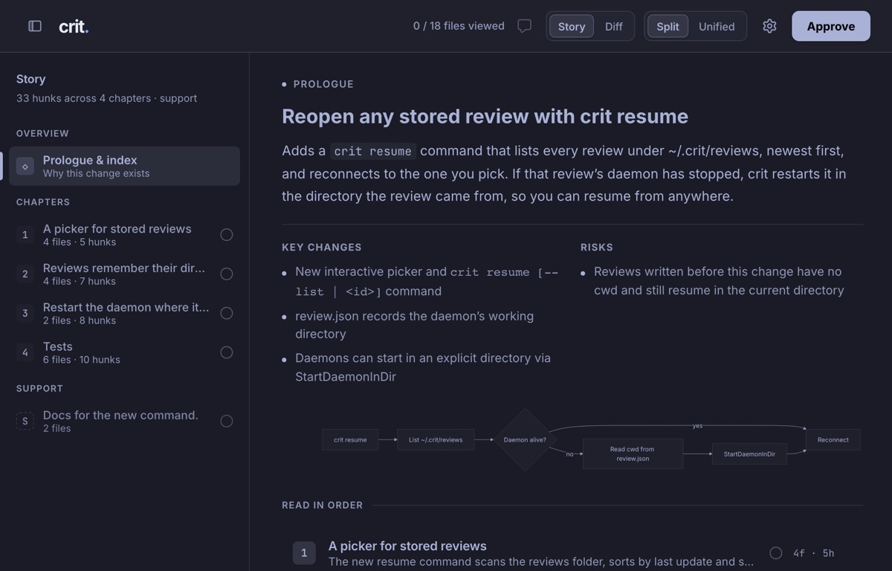
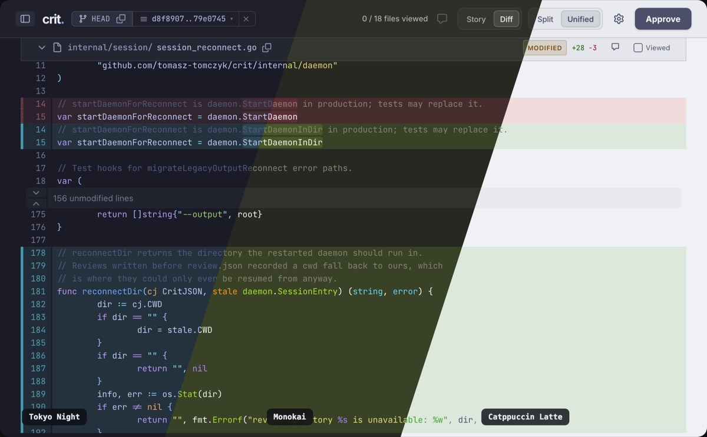

|
|
Story mode, a new renderer, and finish hooks
Hi! Welcome to crit's first newsletter! It's been an exciting summer
where together with support from many contributors we shipped a lot of cool stuff detailed below.
If you'd like to
get the latest goodies, upgrade now:
|
|
|
|
| |
|
STORY MODE
Read a big diff like a story from a coworker
Reviewing code is more time-consuming than ever! Story mode groups
diffs from a
given PR or branch into logical chapters.
Ask your agent for it: /crit-story
|
|

|
|
You can customise what chapters you generate with custom agent prompts.
|
|
| |
|
NEW BLAZING FAST RENDERER
Diff engine that stays fast on huge reviews
We replaced crit's hand-written diff view with @pierre/diffs.
Thanks to support from @jakebf!
It supports every Shiki theme. Pick one for light mode and one
for dark, and the whole review UI takes on its colours.
|
|

|
|
36 ms
of blocking on page load for a 300-file, 9k-line review. 0 ms while scrolling.
|
350 → 5 ms
main-thread cost to highlight a 2,000-line code block in a plan.
|
|
|
| |
|
CUSTOM AGENT HOOKS
Decide what the agent does after a review
When you finish a round or approve, crit hands your agent a prompt.
Now you can customise that prompt, per project, and per review type. Inspired by a GH issue from @TheCoreMan.
This one splits a big review across subagents so your main session doesn't get bloated with too much context:
|
|
.crit/prompts/on_finish_unresolved.diff.md |
| {{if gt .unresolved_count 10}}
This review has {{.unresolved_count}} comments
across {{len .files_with_comments}} files.
1. Group by topic and spawn one subagent per group.
2. Reply with `crit comment --reply-to`
3. When done: {{.next_round_cmd}}
{{end}} |
|
|
Using a knowledge base? Save learnings from reviews there.
There are command hooks too.
They run your own shell scripts at the same points, for things you want to run programmatically. No LLM involved.
Inspired by a GH issue from @bezbec.
Prompt
hook guide →
Command
hooks guide →
|
|
| |
Review with your team on crit.md
|
|
01 Create
a team
|
02 Invite
coworkers
|
03 Share
a review
|
|
|
$ crit share --org acme
plan.md
|
|
|
|
| |
|
ALSO NEW
|
|
› |
GitLab merge
requests. crit pull and crit push work with
MRs, the same as GitHub PRs. |
|
› |
crit
resume. Lists your saved reviews and reopens one from anywhere.
|
|
› |
Custom shortcuts. Remap any keyboard shortcut, locally and on crit.md. |
|
› |
Mermaid full
screen. Open them in full screen with pan and zoom. |
|
› |
Round-ready
notifications. Get a desktop ping when the agent finishes a round. The tab can
close itself after you approve. |
|
|
| |
|
THANK YOU
I read and appreciate every bug report and feature idea. GitLab support, the 300-file speedup, the code font setting and many other features and bug fixes
came from these wonderful people.
@acatxnamedvirtue, @AndreyMalykhin, @bewa1t, @blyoa, @CarlosZ, @csharp-neet, @ekisu, @felix-dumit, @FlorentDhamma, @gmatev, @hbogaeus, @hitochan777, @Igal-Kraisler-Forter, @jacob-winkler, @jalopez, @jbrooksbartlett, @jmehnle, @John-Isr, @jvaldiviezo9, @keoz-higidi, @kizashi1122, @komase, @Laveshka, @littlefyr,
@makotodejima, @mariaines,
@mattnworb,
@meganemura, @miyataka, @mochadwi, @omervk, @omry, @pqppq, @prateek, @pstibrany,
@rsanheim,
@schrek1, @scottbradybuckii, @sethfitz, @simenbrekken, @ssemakov, @stevenpollack, @technicalpickles, @usadamasa,
@Yofou and @yoshitsugu.
|
|
|
Got thoughts, feedback, or something that bugs you?
Just hit reply. I read every email. And if crit saves you time, a star on
GitHub or passing it on to a coworker helps a lot! Thank you!
|
Written 100% by a human. You get this because you turned on "Email me about new features and releases" on crit.md. Promise to only email you when really cool stuff ships!
Unsubscribe · Email settings
|
|
|